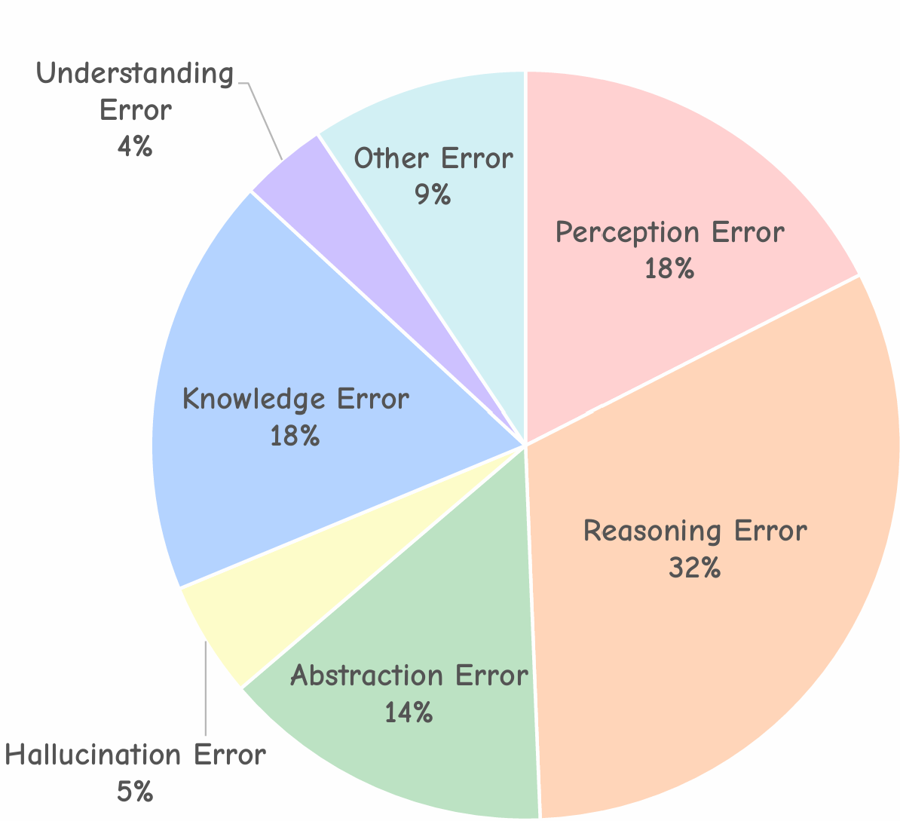
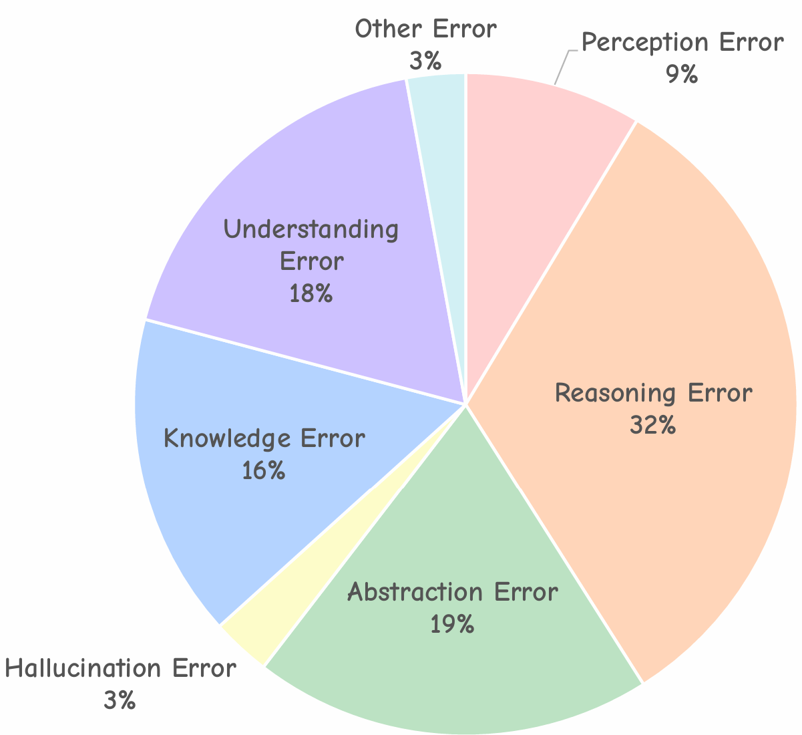

Performance comparison of SOTA MLLMs on MMR-Life.
 MMR-Life
MMR-Life
Piecing Together Real-life Scenes for Multimodal Multi-image Reasoning
2,646 Questions
Multi-image reasoning tasks from daily scenes.
19,108 Images
Household, dining, sports, and real-life contexts.
7 Reasoning Types
Abductive / Analogical / Causal / Deductive / Inductive / Spatial / Temporal.
37 Models Evaluated
Open-source & proprietary MLLMs under unified protocols.
🔔News
📢[2026-02-27] Officially open-sourced the paper, dataset, and code.
🎉[2026-01-26] Our paper was accepted to ICLR 2026.
Introduction
Recent progress in the reasoning capabilities of multimodal large language models (MLLMs) has empowered them to address more complex tasks such as scientific analysis and mathematical reasoning. Despite their promise, MLLMs’ reasoning abilities across different scenarios in real life remain largely unexplored and lack standardized benchmarks for evaluation. To address this gap, we introduce MMR-Life, a comprehensive benchmark designed to evaluate the diverse multimodal multi-image reasoning capabilities of MLLMs across real-life scenarios. MMR-Life consists of 2,646 multiple-choice questions based on 19,108 images primarily sourced from real-world contexts, comprehensively covering seven reasoning types: abductive, analogical, causal, deductive, inductive, spatial, and temporal. Unlike existing reasoning benchmarks, MMR-Life does not rely on domain-specific expertise but instead requires models to integrate information across multiple images and apply diverse reasoning abilities. The evaluation of 37 advanced models highlights the substantial challenge posed by MMR-Life. Even top models like GPT-5 achieve only 58% accuracy and display considerable variance in performance across reasoning types. Moreover, we analyze the reasoning paradigms of existing MLLMs, exploring how factors such as thinking length, reasoning method, and reasoning type affect their performance. In summary, MMR-Life establishes a comprehensive foundation for evaluating, analyzing, and improving the next generation of multimodal reasoning systems.
MMR-Life Benchmark
Dataset Overview
MMR-Life evaluates how models integrate information across multiple images to solve everyday problems. Each item combines real-world photos (home, dining, sports...) with carefully designed distractors to test multi-step reasoning rather than single-image perception.

Real-world scenes
Multimodal Multi-image inputs
Diverse Reasoning Types
General-Knowledge Reasoning
Experiment Results
Leaderboard
Error Analysis
We analyze failures of GPT-5 and Gemini-2.5-Pro across reasoning types. Reasoning errors dominate (32%), including causal inversion (24%), temporal confusion (42%), and missing steps (24%). Abstraction issues (17%) and knowledge gaps (17%) highlight the need for stronger long-horizon reasoning and recall; perception errors (12%) show difficulty in fine-grained visual cues.

Error distribution over 140 annotated GPT-5 errors.
Error distribution over 140 annotated Gemini-2.5-Pro errors.
Error Examples


Correct Examples


BibTeX
@inproceedings{yue2023mmmu,
title={MMMU: A Massive Multi-discipline Multimodal Understanding and Reasoning Benchmark for Expert AGI},
author={Xiang Yue and Yuansheng Ni and Kai Zhang and Tianyu Zheng and Ruoqi Liu and Ge Zhang and Samuel Stevens and Dongfu Jiang and Weiming Ren and Yuxuan Sun and Cong Wei and Botao Yu and Ruibin Yuan and Renliang Sun and Ming Yin and Boyuan Zheng and Zhenzhu Yang and Yibo Liu and Wenhao Huang and Huan Sun and Yu Su and Wenhu Chen},
booktitle={Proceedings of CVPR},
year={2024},
}